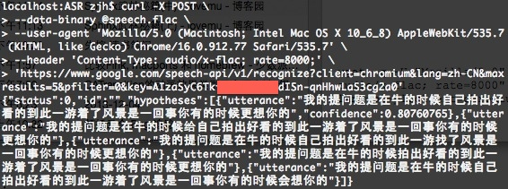

简介：很久很久以前, 网上流传着一个免费的,识别率暴高的,稳定的Speech To Text API, 那就是Google Speech API. 但是最近再使用的时候,总是返回500 Error. 后来通过查看源码知道需要增加一个参数:key=.... 可能是为了防止滥用吧. 并且, 最近Chrome另外发布了一个长连接实时的识别接口, 这对开发者来说真是巨大的福音啊. 在这里主要对这两个接口的用法进行介绍.
关键字
SpeechToText,API,google,STT,ASR,SR,speech,recognition
申请Chromium API keys
本文使用的Google Speech API是为google自家的浏览器Chrome服务的. 可以通过这个Demo体验一下实际使用的效果: Google Speech To Text Demo.
Chrome来源于开源项目Chromium. 为了方便开发者调试使用, google 开放了这个STT(Speech to Text)接口. 但是, 因为这个借口只供调试使用, 所以在流量和次数上都有限制.并且, 不提供购买.
好了, 背景介绍完毕, 我们来第一步: 申请Chromium开发者权限.
具体步骤请参考how to get chromium API keys).
Acquiring Keys
- Make sure you are a member of chromium-dev@chromium.org (you can just subscribe to chromium-dev and choose not to receive mail).
For convenience, the APIs below are only visible to people subscribed to that group.- Make sure you are logged in with the Google account associated with the email address that you used to subscribe to chromium-dev.
- Go to https://cloud.google.com/console(请使用旧版console)
- Click the red Create project… button.
- (Optional) You may add other members of your organization or team on the Team tab.
- In the ‘APIs & auth’ > APIs tab, click the On/Off button to turn each of the following APIs to the On position, and read and agree to the Terms of Service that is shown:
(This list might be out of date; try searching for APIs starting with “Chrome” or having “for Chrome” in the name.) * Chrome Remote Desktop API
- Chrome Spelling API
- Chrome Suggest API
- Chrome Sync API
- Chrome Translate Element
- Google Maps Geolocation API (requires enabling billing but is free to use; you can skip this one, in which case geolocation features of Chrome will not work)
- Safe Browsing API
- Speech API
- Time Zone API
- Google Cloud Messaging for Chrome
- Google Now For Chrome API
If any of these APIs are not shown, recheck step 1.- Go to the Credentials tab under the APIs & auth tab.
- Click the red Create New Client ID button in the OAuth section to create an OAuth 2.0 client ID.
- You want “Installed Application” for the Application type section
- You want “Other” for the Installed application type section
- A new box should now appear titled “Client ID for installed applications”. In the next sections, we will refer to the values of the “Client ID” and “Client secret” fields in this box later (below).
- Click the red Create New Key button in the Public API Access section and create a new Browser key.
You want to leave the box on the “Create a browser key and configure allowed referers” empty.- A new box should appear titled “Key for browser applications”. The next sections will refer to the value of the “API key” field too.
好了, 到这里, 我们已经获得了应用key, 在下文我们用{key}表示这个key.
One Shot Recognition
我们用curl来向服务器发送请求:
1 | curl -X POST \ |
| 参数 | 解释 |
|---|---|
| -X POST | 表示发送HTTP请求 |
| –data-binary @speech.flac | 发送音频文件speech.flac |
| –user-agent ‘…’ | http的参数,设置浏览器的user-agent信息 |
| –header | http的参数. 指定了传送内容的类型(audio/flac)和音频频率(8000Hz). 注意, 只支持特定的几种频率(8000Hz,4000Hz还有几个记不清了),上传的flac文件频率要和参数一致. |
| https://www.google.com/.../&key= AIzaSyC6Tkf*****Q0CdISn-qnHhwLaS3cg2a0 |
http请求地址,其中最后一部分的key,应该替换为您申请的{key}. |
等待一分钟左右, 如果你运气好的话, 能看到如下结果:

结果格式如下, 应该很清晰了吧:
1 | { |
如果您录音的格式不对的话, 可以用开源软件sox方便的转换格式和码率. 举个栗子:
1 | sox ./speech.mp3 -b 8 speech.flac trim 0 15 |
| 参数 | 解释 |
|---|---|
| ./speech.mp3 | 输入文件 |
| -b 8 | 输出文件频率为 8kHz |
| speech.flac | 输出文件名 |
| trim 0 15 | 截取输入文件的0~15秒的部分, 输出出来 |
Stream Recognition
后来, Google 提供了更先进的live的双向的识别接口. 即同时打开两个HTTP连接, 一个负责实时发送(POST)音频流, 一个负责接受(GET).
这里有一个PHP版本的Demo. 可以参考实现您自己的Stream Recognition:
Google Speech API – Full Duplex PHP Version
引用:
Google Speech API – Full Duplex PHP Version
http://mikepultz.com/2013/07/google-speech-api-full-duplex-php-version/Accessing Google Speech API / Chrome 11
http://mikepultz.com/2011/03/accessing-google-speech-api-chrome-11/Google Speech To Text API ( 9 months ago )
https://gist.github.com/alotaiba/1730160避开Google Voice Search利用Google Speech API实现Android语音识别
http://my.eoe.cn/sisuer/archive/5960.htmlHow to Use Google Speech API( with sox )
http://www.x2q.net/blog/2013/09/16/how-to-use-google-speech-api/Google Chomium Open Project
http://src.chromium.org/viewvc/chrome/trunk/src/content/browser/speech/
http://src.chromium.org/viewvc/chrome/trunk/src/content/browser/speech/google_one_shot_remote_engine.cc